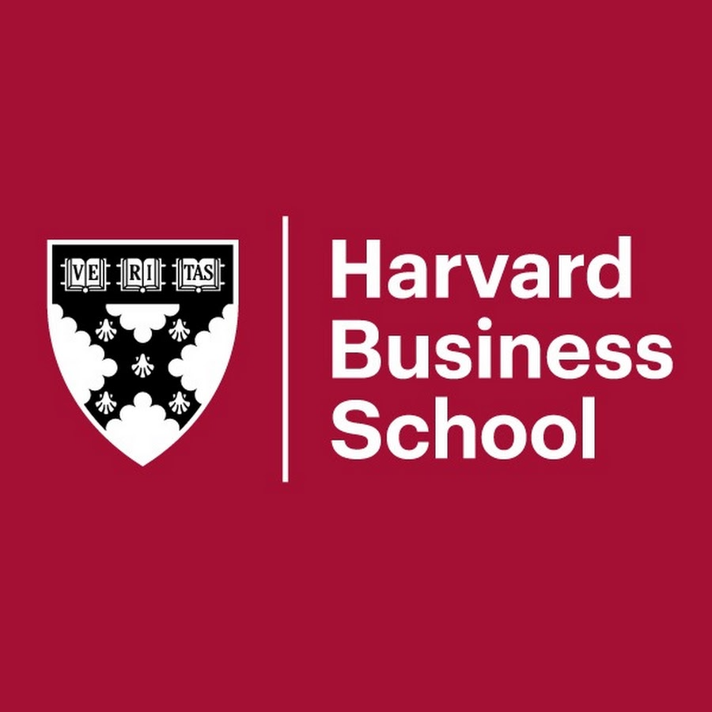

University of California San Diego
Master of Science in Business Analytics
Rady School of Management · Class of 2025 · San Diego, California
Turning complex data into auditable decisions across risk analytics, business intelligence, automation, and applied AI.
I am a data professional with 4+ years of experience delivering Power BI, Tableau, and SQL-driven insights across US biotech, Indian real estate, and financial services.
Holding an MS in Business Analytics from UC San Diego’s Rady School of Management (Class of 2025), with graduate work spanning SQL/ETL, fraud analytics, Python, machine learning, business intelligence, and applied research, I build analytical systems that turn complex data into reliable business decisions.
Hours Saved Annually
CAC Reduction
Leakage Flagged
Academic Foundation
Graduate training in business analytics, supported by hands-on research, industry consulting, and entrepreneurial leadership.
Rady School of Management · Class of 2025 · San Diego, California

Entrepreneurship-focused academic credential.
Biotechnology company specializing in RNA analysis and genomics.
Real estate development company focused on residential and commercial projects.
Financial services and equity brokerage firm focused on investment and capital-market activities.
Built an end-to-end institutional-style risk analytics workflow for a simulated ₹1B Indian equity portfolio, integrating market-data ingestion, PostgreSQL, Python analytics, automated controls, benchmark analysis, stress testing, and Power BI reporting.
Recommendations from academic and industry collaborators, plus leadership experience at UC San Diego's Rady School of Management.
Epstein/Atkinson Chair in Behavioral Economics · UC San Diego
“He took the initiative to build automated Python scripts to clean and validate over 5,000 behavioral survey records.”
UC San Diego Fraud Analytics Professor · Strategic Advisor at AssetTrace
“Abhishek was one of the best students in my UCSD Fraud Analytics class... He got an A+ and was one of the highest overall performers.”
Director of Operations · Eclipse BioInnovations
“His initiative, strong communication, and collaborative approach were critical to the project's success.”
Mar 2025 — Oct 2025
Supported alumni engagement and community-building for Rady's student venture capital organization, helping connect students with professionals across venture capital, finance, and entrepreneurship.
Nigam Cinematics creates cinematic AI-assisted advertising and visual storytelling for premium brands, combining generative video workflows with human-directed editing, sound, pacing, and brand strategy.
Grateful to mentors, professors, entrepreneurs, and investors whose guidance and conversations broadened how I think about leadership, venture building, and scaling businesses.
Decomposer.ai · Former Harvard professor · CNBC Disruptor 50 judge
Special thanks to Prof. Teixeira for expanding my exposure to entrepreneurship and for introducing me to accomplished founders and investors, including Scott Walchek and Stephan Aarstol.
View LinkedIn profileEntrepreneur & Venture Investor
Known for early venture involvement with Baidu and board service through the company's 2005 IPO.
Founder · Tower Paddle Boards
Entrepreneur whose company gained national recognition on Shark Tank and secured a $150,000 investment from Mark Cuban.
Former Mayor of Milpitas, California
Special thanks for his mentorship, entrepreneurial guidance, and perspective on leadership.
LinkedInPower BI Data Analyst
Azure Data Fundamentals
Designing & Implementing Azure AI
Available immediately for remote and hybrid roles globally.